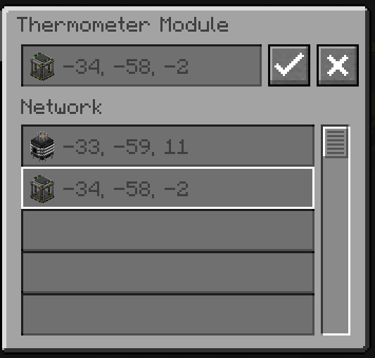
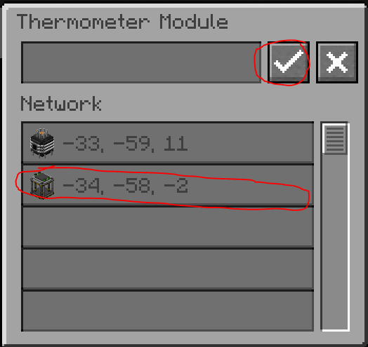
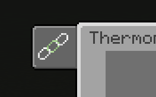

Réseau logistique de réacteur (RL)
Publicité
Pourquoi utiliser le réseau RL ?
Gérer les réacteurs manuellement est fastidieux et dangereux — ravitailler un réacteur à fission ou MS vous expose aux radiations. Le réseau RL automatise tout : ravitaillement, extraction des déchets, surveillance de température, contrôle des barres.
Composants du réseau
| Composant | Rôle |
|---|---|
| Contrôleur RL | Cerveau du réseau. Un seul par réseau. Consomme 5 kW à 120 V. Permet la communication entre tous les modules. |
| Câble logistique RL | Relie tous les composants. Fibre optique blindée — aucune perte d'énergie sur la distance. |
| Interface fission | Remplace la barre de contrôle sous le réacteur à fission. Permet au réseau d'interagir avec le cœur. |
| Interface fusion | Placée sous le réacteur à fusion. Même rôle que l'interface fission. |
| Interface MS | Remplace la barre de contrôle MS sur le réacteur MS. |
| Module barre de contrôle | Télécommande pour la barre de contrôle. Supporte le redstone (signal 15 = 100% insertion). Un seul par réacteur. |
| Module moniteur | Affiche les infos du réacteur à distance. Plusieurs peuvent être liés au même réacteur. |
| Module thermomètre | Surveille la température et émet un signal redstone. Modes : Constant ou Progressif. Inversable. |
| Module d'approvisionnement | Ravitaille le réacteur en combustible (9 slots haut) et extrait les déchets (9 slots bas). Gère aussi la production de tritium. |
Interface de liaison (Link GUI)
Chaque module doit être lié à une interface de réacteur. Pour accéder au menu de liaison :
- Soit c'est la seule option dans l'interface du module
- Soit accessible via l'onglet de liaison dans l'interface


Sélectionnez l'interface dans la liste, puis appuyez sur Activer pour lier. Appuyez sur Désactiver pour délier.

Perte de connexion
Si le contrôleur RL perd son alimentation, les modules conservent leurs liaisons mais ne peuvent plus communiquer entre eux. Ils reprennent dès que le contrôleur est réalimenté.
Module thermomètre — Modes de signal
| Mode | Comportement |
|---|---|
| Constant | Signal 15 quand temp ≥ cible, signal 0 sinon (inversable) |
| Progressif | Signal 0→15 proportionnel à temp/cible (inversable) |